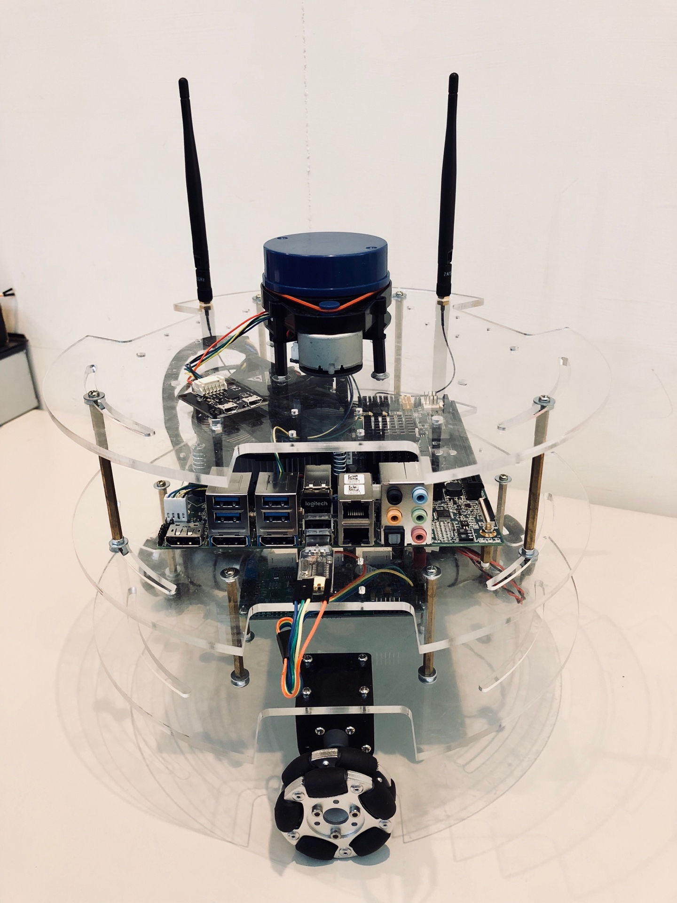
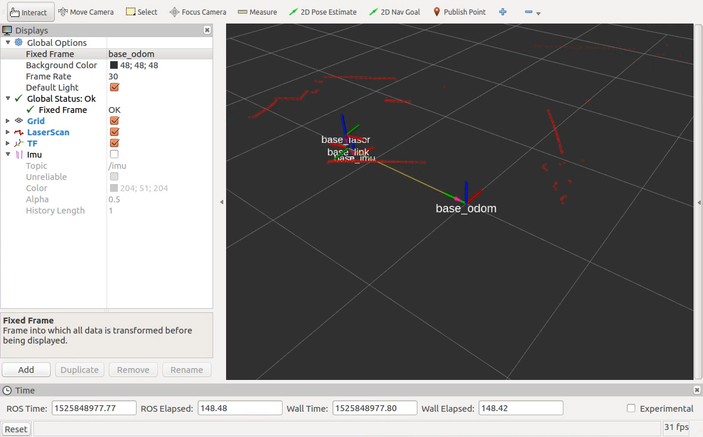
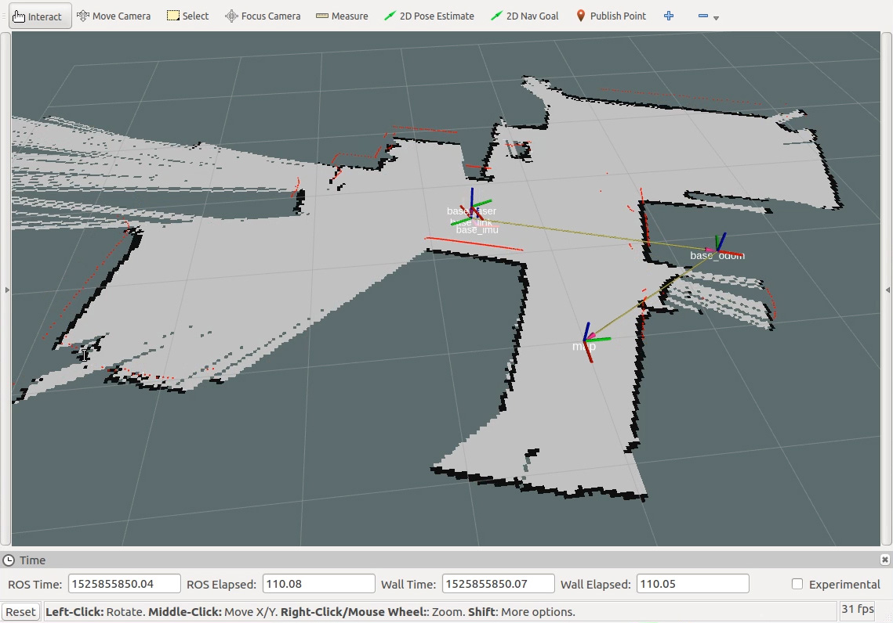
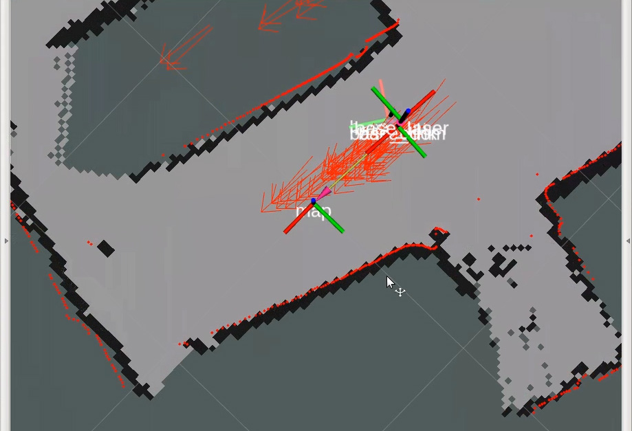
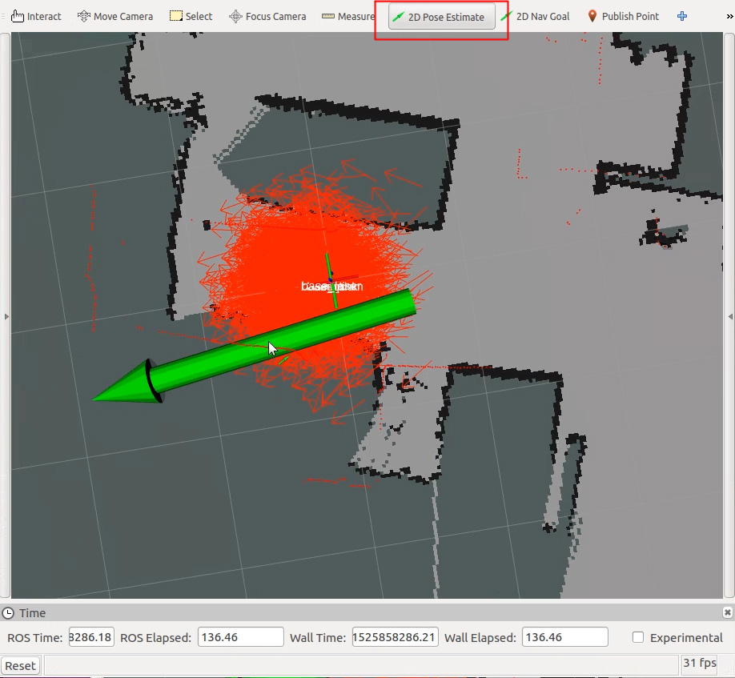
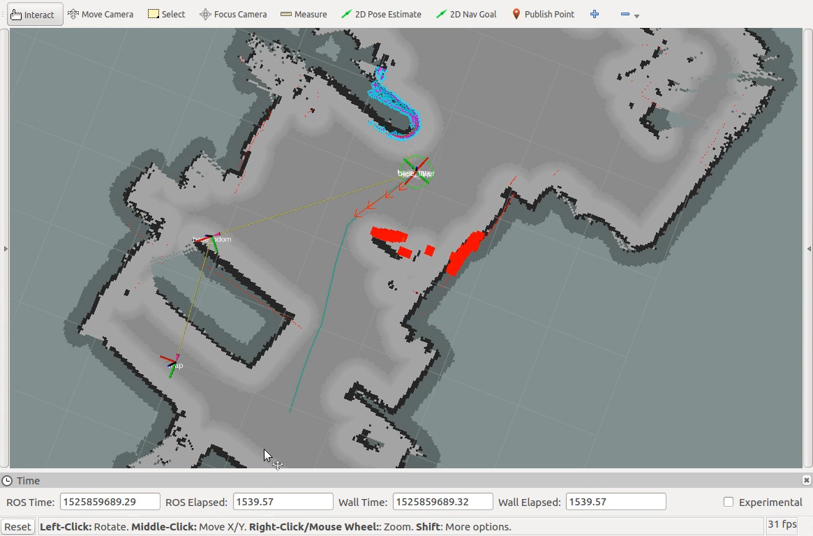
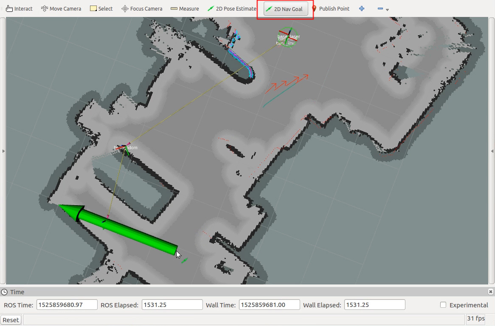
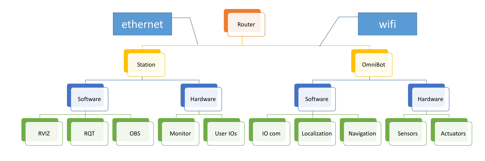

Neuron Omni Bot
This is a demo package of Neuron Omni Bot's autonomous and fast integration capability using ROS

Features
- Fully integration between SEMA library and ROS2
- Three omni-directional poly wheels with a 12V 4.32 watt DC motor on each wheel
- Quadrature hall effect encoder provide 390 pulses (1560 count) per wheel revolution
- Fully customized VDMC using STM32F103 chip
- Fully customized ROS motor driver node that utilize standard ROS convension
- MPU6050 6-axis IMU and it's corresponding ROS publisher with standard ROS state estimator
- Easy to use ROS launch file with maximum custimization capabilities
- Finely tuned ROS navigation, guidance, and control algorithms with full list of parameters provided
- Multiple user interfaing methods using the SEMA library
Getting Started
These instructions will get you a copy of this demo and running on your local machine. If you're unfamiliar with ROS operation, there are some usefull trick you may want to try in the section below For multiple machine remote control, please visit multi-machines section below.

Prerequisites
- Neuron hardware and SEMA library
You'll need the ADLINK SEMA library and a compatible motherboard to run this example. You can conatct TODO: SOMEONE for more information. - Download the source of this project to your ROS (catkin) workspace
cd catkin_ws/src git clone https://github.com/EwingKang/Neuron-OmniBot.git neuron_omnibot - Some electronics hardware: 3 LEDs, 3 contact switches, 1 tactile(push) switch
- Laser scanner with its corresponding ROS node properly installed.
- Wires properly connected (see hardware setup section below)
Installing
a) hardware setup
Connect all the wire properly according to this diagram: (click to download)

{kind=link}
- VDMC manual
- connect 12V power from Neuron PSU
- Connect UART port to MAX232 or any equivilant UART-RS232 bridge chip (NOTE: some manufacture may have their RX/TX label reversed)
- connect to Neuron serial port 2
- Laser scanner (ex. YDLidar)
- USB wire
- 5v power (from SEMA feature connector SB5V is recommand)
- SEMA peripherals (collision detection, state indication LEDs)
- LEDs: positive to GPIO, Negative to GND
- switches: across GPIO and GND
- Other recommandations
- It is recommanded to have your robot's sharp edges wraped
- DO NOT obstruct the view of laser scanner
- Your two wifi antennas should be pointing perpendicular(i.e. 90 degrees) to each other
- ALWAYS put on your balance lead monitor if your using Li-Po batteries
b) software setup
-
Install ADLINK SEMA Your Neuron Bot should already have proper SEMA installed. Please go to TODO: EMPTY PROJECT if you have any questions.
-
Install ROS kinetic and setup workspace Your Neuron Bot should already have ROS set. If not, you mar refer to the install guide, and catkin_ws setup guide. Make sure you have environmental path add to .bashrc to save time
-
Install packages (ubuntu software):
-
ROS stuff
-
robot localization
sudo apt-get install ros-kinetic-robot-localization -
laser slam
sudo apt-get install ros-kinetic-gmapping ros-kinetic-scan-tools\ ros-kinetic-navigation # laser slam -
navigation and planning
sudo apt-get install ros-kinetic-teb-local-planner ros-kinetic-teb-local-planner-tutorials\ ros-kinetic-eband-local-planner
-
-
Recommanded
- KATE: text editor (very similar to Notepad++)
sudo apt-get install kate - htop: a low-cost system monitor
sudo apt-get install htop - serial port terminoa (GUI monitor)
sudo apt-get install gtkterm - OBS
- SSH server
sudo apt-get install openssh-server
- KATE: text editor (very similar to Notepad++)
-
-
Set up SEMA soft link Change to any node that uses SEMA library, find the SEMA include library header location, and run the auto shell command file.
cd ${project_root}/lib e.g.: cd catkin_ws/src/neuron_omnibot/neuron_demo_gpio/lib ./setlink.sh
Note: If you get some error likeerror: no such file as..., you'll need to make the setlink.sh executable bychmod +x setlink.shafter you've changed the command prompt to that directory. -
Compile the source code
Now, we'll use the Catkin, the ROS build management tool to build our nodes. We'll need root access for library linking for anything that uses SEMA. Root access is gained by the second step below. Great power comes with great responsibility, it is strongly recommanded you to exit root mode since you can to terrible stuff with that much of power.cd ~/catkin_ws sudo -sE catkin_make exit #exit root mode -
Setup Laser scanner port (from YDLidar github)
roscd ydlidar/startup sudo chmod 777 ./* sudo sh initenv.sh -
Add serial access
sudo adduser ros dialout
Run the demo
The Neuron Omnibot demo can be divided into four part: Omnibot IO: motor controller, laser scanner, LED indecators, and servos SLAM: simultaneous localization and mapping Localization: after we build our 2D map Move!: Obstacle detecting, planning, trajectory generation, and vehicle control
Each of the above function is wraped as a single ROS launch file for user's easy execution. We'll have a step-by-step tutorial below. For each launch file, we'll open a new terminal. You can do that by pressing ctrl + alt + t
a) OmniBot driver
In this section, we'll start our ROS omnibot driver. The driver includes all the IO and sensory device including motor controller, encoder odometry, laser scanner, and IMU state estimation.



-
roscore
roscore is the core of the ROS as its name suggest. We encourage you to manually start the core on a seperate window because it gives user the power and responsibility to control everything.roscore -
Robot Base driver This launch file include multiple node. It launches the communication between STM32 motor controller, laser slam, as well as all the robot TF definition. Please note that if you're ending the node by
ctrl + c, you only have to hit once and give it a seconds for it to shutdown automatically. The LaserScan node requies some time to shutdown the serial port.roslaunch omni_base_driver omni_localization.launch - Keyboard controller node
We use teleop_twist_keyboard as our manual driver. The default command is a little too fast, so use
xandcto reduce velocity to around 0.3.rosrun teleop_twist_keyboard teleop_twist_keyboard.pyNote: because Neuron OmniBot is a holonomic robot, you can holdshift+moving around command to do translational moving. - RVIZ monitoring
RVIZ stands for ROS-VIsualiZation, which is a powerfull 3-D visualization environment. We can launch RVIZ simply by:
rvizNow, use the "File -> Open Config" orctrl + oto open base visualization settings located at$(omni_base_driver)/rviz_config/omni_driver_laser.rviz. One should note that despite it is easier to simply use the gui provided to open the rviz config file, it is possible to use command line by adding absolute path:rviz -d "/home/ros/catkin_ws/src/neuron_omnibot/omni_base_slam/rviz_config/omni_slam.rviz"
b) Laser Slam
In this section, we'll build our map with our 2D laser scanner.



- Make sure you have everything in the base driver launched. This includes all the robot TF, motor driver, and laser scanner.
- Setup rviz correctly so we can see everything:
you can open
($ omni_base_slam)/rviz_config/omni_slam.rvizmanually, or by running the following command:rviz -d "/home/ros/catkin_ws/src/neuron_omnibot/omni_base_slam/rviz_config/omni_slam.rviz" - Let's start the laser localization and mapping procedure with gmapping by the following command:
roslaunch omni_base_slam omni_gmapping.launch - Drive around using keyboard driver introduced in base driver.
- After you map the whole place, remember to save the map before closing the gmapping:
rosrun map_server map_saver -f map_file_nameA map file(.x) and a config file (.xxx) will be saved under your user home~/, make sure to move both of these files to($ omni_base_slam)/map/ - Stop the gmapping by
ctrl + con the gmapping terminal (terminal of the step.4).
c) Robot Localization
After we acquired a static map, it is often that we do not run a SLAM package all the time due to its comutational load. In this step, we'll uses the the AMCL package to help us find the robot's location given previously generated map and current laser scan.



- Make sure you have everything in the base driver launched. This includes all the robot TF, motor driver, and laser scanner.
- Setup rviz correctly so we can see everything:
you can open
($ omni_base_nav)/rviz_config/omni_amcl.rvizwith rviz gui, or by running the following command:rviz -d "/home/ros/catkin_ws/src/neuron_omnibot/omni_base_nav/rviz_config/omni_amcl.rviz" - Put the map file and its config file to
($ omni_base_slam)/map/as stated in the previous section. Modify line 4 of($ omni_base_nav)/omni_localize.launch,, theargs=tags in the map server, to reflect the correct file name. - Now, we'll start our localization package amcl with our costumized settings:
roslaunch omni_base_nav omni_localize.launchBy default, the localization package will initialize the robot at (x,y)=(0,0), i.e. same as the starting pose when we started the mapping process. However, we can manually assign the starting position by using "set 2D pose estimation" function in the RVIZ if it's not the case. Select the tool, click on the position and drag the arrow for its initial heading. This is shown in the picture below, the "2D pose estimation" is marked by a red square at the upper banner.  - Now we've initialize the robot pose, we can see many arrows in the RVIZ world. These arrows are the particles used to localize the robot. Because of how the Monte Carlo method (AMCL) works, those poses will not update nor converge if the robot remains still. With that being said, we can still ask the localization to try to update by:
rosservice call /request_nomotion_updateAnd you'll see the arrows become more unison and your laser scaning pattern will gradually match with the map. - It is often possible for robot to identify it's initial location without manually set the initiali pose. You can call this service so the localization package will evenly distribute the pose particle. After the global initialization, you can perform multiple no-motion-update mentioned above and the package will localize itself.
rosservice call /global_localization
d) Navigation
With OmniBot localized, we can now do our planning. In this demonstratino, we utilize the move base structure in the ROS navigation stack. This is a very textbook and complete structure of such system.



- base driver is started
- localization is initilized
- RVIZ is set to
($ omni_base_nav)/rviz_config/omni_nav.rviz - There are three different popular local planning package for you to choose: the Dynamic Window Approach, the Timed Elastic Band planner, and the Elastic Band planner. You can choose from one of the following command:
roslaunch omni_base_nav omni_nav_dwa.launch roslaunch omni_base_nav omni_nav_teb.launch roslaunch omni_base_nav omni_nav_eband.launch - After the planner is started, you should see something like the graph below in the RVIZ. You can choose the "2D nav goal" tools on the top banner of the RVIZ. Click on the map and drage to specify the target orientation. The robot should drive toward the goal by itself.  The background gray map is the global map, while the colorful blue-pink-red one is the 1.5x1.5 meter local map. The global path is drawn in cyan while the local planner is draw in blue. Different local planner will have different representation.
Multiple Machines
Typically, it is not so convenient to have your mouse, keyboard and monitor connect to the robot while the robot move around. Fortunately, ROS is constructed in such a way that running the same ROS across multiple machines is very easy. In fact, there is a simple official tutorial about it.
The physical Networking can be easily achieved (and expanded) with a single wifi router as shown below:

- First, findout the OmniBot's IP address. This can be done with linux command
ifconfg. - setup environmental variable. We'll add the variable to the hidden file ".bashrc". You can
ctrl+hto show hidden file, and edit the ".bashrc" manually or by following command:echo 'export ROS_IP=YOUR_OMNIBOT_IP' >> ~/.bashrc echo 'export ROS_MASTER_URI=http://$ROS_IP:11311' >> ~/.bashrcThis step should be done on both station and the OmniBot. - Since we don't have monitor nor keyboard connected, everything will be executed remotely. First, Let's make sure our machines can reach each other by
ping NeuronBot.local # or ping YOUR_OMNIBOT_IP -
We'll setup the SSH connection. (In case you don't have that on the OmniBot, do that now as this previous section has said). This can be easily done by:
ssh NeuronBot.local # or ssh YOUR_OMNIBOT_IP -
At the OmniBot SSH connection, start byobu so we can have multiple terminal in a single SSH connection
byobunow, you can add new terminal withF2, switch between terminals withF3andF4, exit with commandexit - Run omniBot nodes on the Omni Bot through SSH terminal.
- RVIZ and all the other things on the station machine
- Play and fun!
Useful tricks
Linux/Ubuntu terminal
ctrl + shift + Tto open new terminal tabctrl + PageUp/PageDnto switch between tabs
ROS tools
rqtROS - QT, ROS information visualization toolsrostopic: ROS topic server functionsrostopic listto list all topicsrostopic echo /SOME_TOPICto print the topic directly.
rosservice: ROS service server functions
More Info
Videos
Reference
Neuron VDMC Communication and operation manual
Notice
- SEMA requries root access since it needs to talk to the hardware. Execute
SUDO -sEbefore program launch to retain proper shell environment variable.
Version
0.3.0
Authors
- Ewing Kang - VDMC algorithm developer/ ROS implementation - (https://github.com/EwingKang)
- Alan Chen - SEMA library example - (alan.chen@adlinktech.com)
License
This project is licensed under the Apache License, Version 2.0
Acknowledgments
The development of this project is under support and collabration of ADLINK Advanced Robotic Platform Group(ARPG).
future roadmap
- [ ] Object recgonition and tracking using movidius
- [ ] Peripheral sensors and robot casing (with fully SEMA integration)
- [ ] VDMC
- [ ] On-board Kalman filter with full state omniBot dynamics estimater
- [ ] High performance nonlinear-dynamic inversion controller